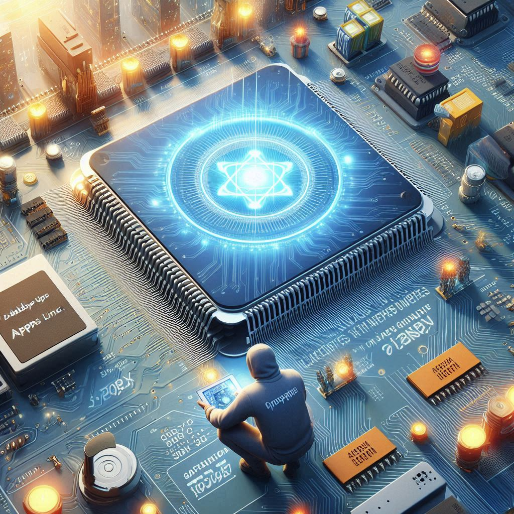

Problem: Data Centers use a lot of electricity.
Solution: a specialized chip to look up data much more efficiently.
Performance independently measured by Open Road for a custom processor versus a generic reduced instruction set computer processor on a 2/3 Keys per leaf/branch B-Tree . The performance gap widens significantly as we increase the number of Keys in each branch and leaf in the B-Tree .
| Area μm² | Fmax MHz | Statements | |||
|---|---|---|---|---|---|
| Custom | Generic | Custom | Generic | Custom | Generic |
| 2467 | 12927 | 902 | 399 | 23 | 122 |
| 5.24 x Smaller | 2.26 x Faster | 5.30 * Compact Code | |||
| Database on a Chip is 62.76 x better | |||||
In the above area in micrometers squared equates to power consumption while frequency in megahertz equates to execution speed. And even better a find operation takes far fewer statements to execute on the custom CPU than it does on the generic CPU because the custom operation-codes are so much better adapted to manipulating a B-Tree .
Data Centers consume more electricity than they really need to.
Data Centers use one hundred times as much electricity as most other
businesses do
, according to the The Wall Street Journal.

Data Centers consume about 300 Terawatt hours per year or 1% of world electricity production.

And this amount is steadily increasing year by year.

About equal to the combined total electricity consumed by these major cities:
| City | Annual Consumption (Terawatt hours) | Percentage of Global Production (%) | Image | City | Annual Consumption (Terawatt hours) | Percentage of Global Production (%) | Image |
|---|---|---|---|---|---|---|---|
| New York City | 53.65 TWh | 0.18% | Los Angeles | 46.3 TWh | 0.15% | ||
| Chicago | 40 TWh | 0.13% | Houston | 70 TWh | 0.23% | ||
| London | 40 TWh | 0.13% | Paris | 68.2 TWh | 0.23% | ||
| Total | 318.15 TWh | 1.06% |
As a consequence, Data Center operators like to locate themselves close to reliable supplies of cheap electricity. For example, Gmail is located near the Bonneville Dam in The Cascades, on the River Columbia, in Oregon.

Global electricity production currently amounts to $2 trillion annually - equivalent to the gdp of Italy.
Appa Apps Inc. is prototyping Database on a Chip, a specialized Silicon chip for use in Data Centers to perform database look-ups 10 times faster while using 10 times less electricity than the generic computers currently in use.

Data Centers do a lot of database look-ups. Every company has a database nowadays and every company spends lots of time and money looking up data up in their database, quickly, because their customers demand it.
If we could make database look-ups just a bit more efficient, Data Center operators would save quite a lot of money on their huge electricity bills - a saving of perhaps $100 million per year.
A bit like James Watt increasing the performance of steam engines from 1% to 2% and thereby kicking off the Industrial Revolution .Today, everyone has a mobile phone with a Graphics Processing Unit implemented in Silicon rather than software because the original, software-only versions were far too slow. And every personal computer has a Graphics Processing Unit for much the same reason.

Bitcoin mining used to be done using just software. At one time you could easily mine a few bitcoins every day with a generic notebook computer. Now, you need to use a factory full of specialized Bitcoin miners that do most of their processing in Silicon rather than in software.

Implementing database software effectively in Silicon will help Data Center operators be more competitive by reducing the cost and time spent doing database look-ups.

1845: HMS Rattler (propeller) vs HMS Alecto (paddle wheels). Rattler pulled Alecto backwards, proving propellers are more effective than paddle wheels.
Appa Apps Inc. has recently succeeded in synthesizing and routing a Verilog version of the well known B-Tree database algorithm normally written in the C programming language ready for placement on an application specific integrated circuit .
Performance as measured by Open Road for the custom CPU versus a generic CPU on a 2/3 Keys per leaf/branch B-Tree . The performance gets even better as we increase the number of Keys in each branch and leaf of the B-Tree .
| Area μm² | Fmax MHz | Statements | |||
|---|---|---|---|---|---|
| Custom | Generic | Custom | Generic | Custom | Generic |
| 2467 | 12927 | 902 | 399 | 23 | 122 |
| 5.24 x Smaller | 2.26 x Faster | 5.30 * Compact Code | |||
| 62.76 x better | |||||
In the above area in micrometers squared equates to power consumption while frequency in megahertz equates to execution speed. And even better a find operation takes far fewer statements to execute on the custom CPU than it does on the generic CPU because the custom operation-codes are so much better adapted to manipulating a B-Tree .
The layout of the custom CPU as produced by Open Road .

The layout of a generic CPU capable of executing the C programming language version of the B-Tree algorithm as produced by Open Road .

We have also been able to run the find action successfully on an Field Programmable Gate Array:

In the image, the power light is the LED at the bottom, then reading up the first 4 LEDs from the power LED having values 8, 4, 2, 1 are signalling that the data associated with database key is 4 or in binary:
P 0100F0
where F is powered on showing that the database key was successfully found in the B-Tree .
We aim to raise $1 million for a seed round to produce a prototype working application specific integrated circuit to show to the major Data Center operators as proof of concept. This will involve:
Just me and Chat GPT

Chat GPT is very useful as it does all the boring low-level coding, letting me concentrate on the problem of what, exactly, should be coded.
Appa Apps Inc. is a class C corporation registered in Austin, Texas.
No, none at all. Just creating the prototype has occupied me fully for the last two years with no time off for anything else.
Our business model is a pure Intellectual Property play. We would license the copyright to our design, allowing foundries to fabricate specialized Silicon chips to replace the generic ones currently in use for database lookups in Data Centers . This approach mirrors the business model of industry leaders such as NVIDIA, ARM, and Qualcomm.
Our ideal customers are the top 10 hyperscale Data Center operators, such as:
Hyperscalers have enormous electricity bills, which is why they strategically locate their Data Centers near hydroelectric dams and nuclear power stations. They are well aware of the need to reduce electricity costs, as their shareholders demand it. As a result, they must invest in the most cost effective chips available. There is no other alternative except going out of business.
We are the best team to bring this solution to market because we have succeeded in producing a routable Verilog design when no else seems to have done so. We are combining the ideas of specialized chips and continuous improvement as discussed in these seminal books:
wasaitech - but only 3 times faster compared to pur measured 62 times faster.
rENIAC - but uses 100 times as much power while still being slower because they use an Field Programmable Gate Array instead of an application specific integrated circuit .
We need funding and help presenting our prototype effectively to the right people who are capable of making purchase decisions.
https://github.com/philiprbrenan/btreeBlock